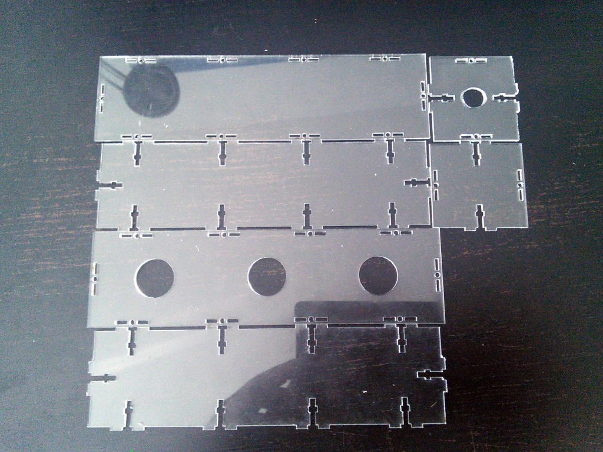
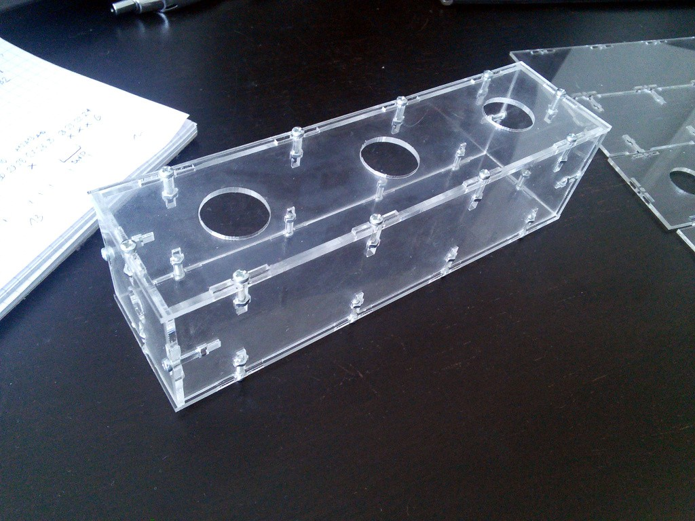
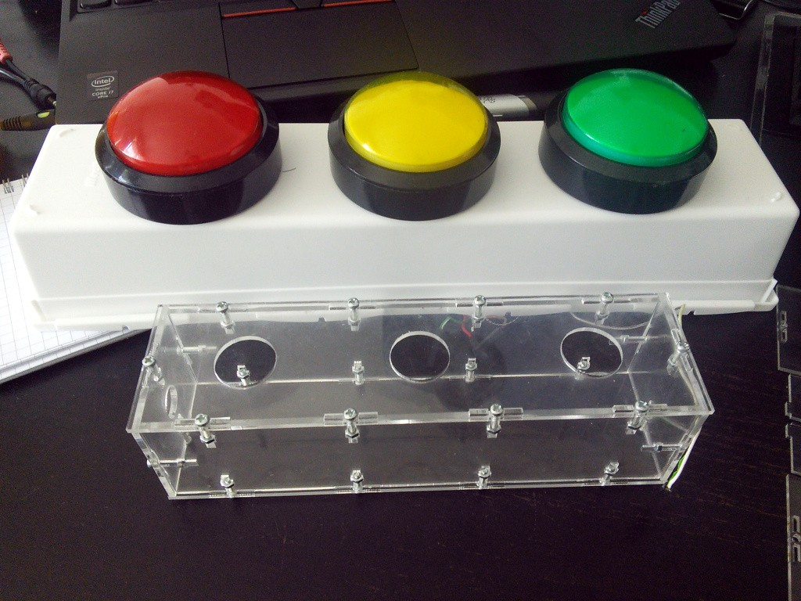

Laser Cutting¶
Published on 2015-08-08 in Talk Ranking Machine.
Since this is supposed to be an actual consumer device, used by hundreds of people, it has to meet a little higher standards for looks and sturdiness, than my usual contraptions. That’s why I decided to laser-cut the box from clear acrylic. I visited a nearby FabLab , where I received a quick training and a lot of help, and came out with this:
It looked suspiciously small for the dimensions of the original design that I made using Inkscape… When I started assembling it, it turned out that the slots are too narrow for the 2mm thickness of the acrylic… Hmm, suspicious. But I filed the “ears” down a little and assembled the box:
Looks great, let’s see how the buttons fit in it…
Well, they don’t fit. The box is about 75% of the size it was supposed to be. Turns out that the program I used to convert SVG to PDF scaled it down to fit whatever it thought it was supposed to fit. Argh. I used an external program, because for some reason Inkscape was unable to export circles which have 0.01mm line thickness. Can’t really say why. Oh well, today I will try again with a proper PDF.